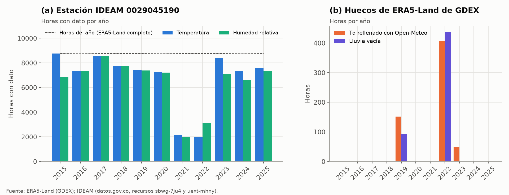
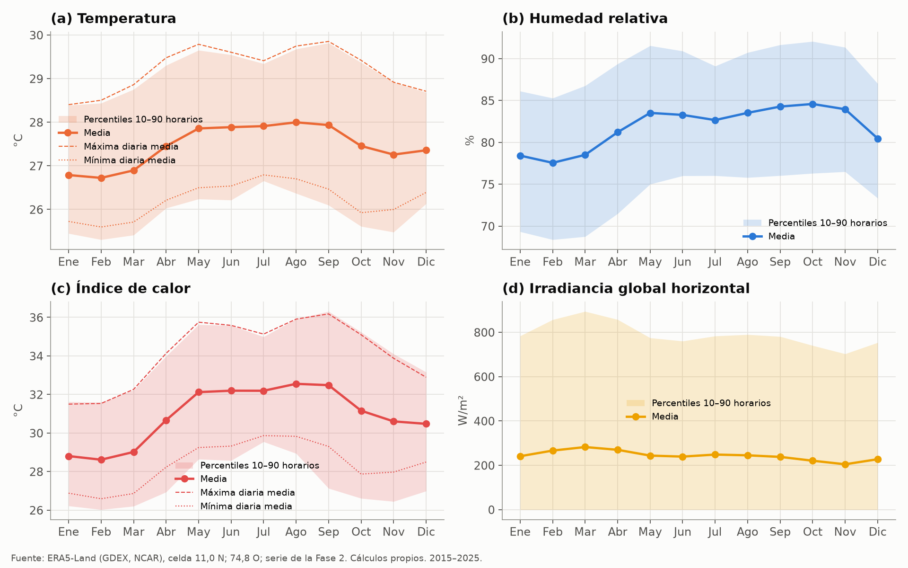
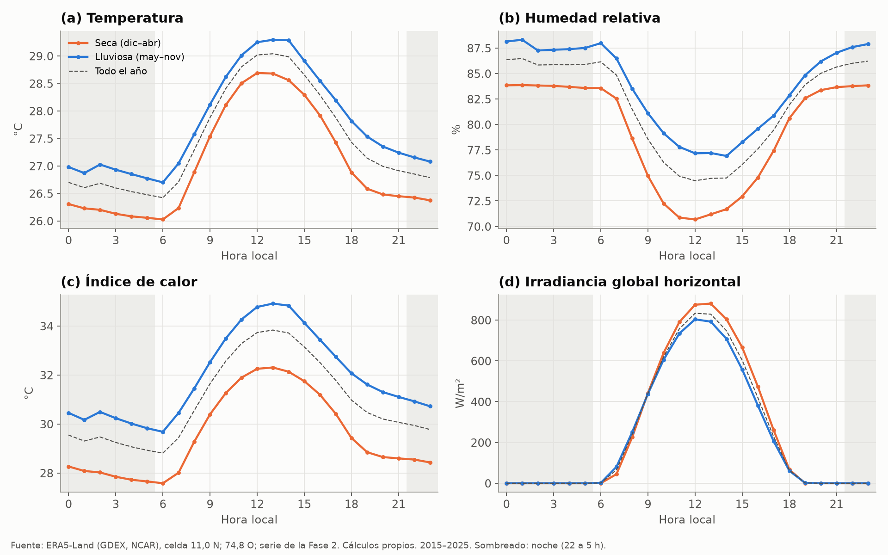
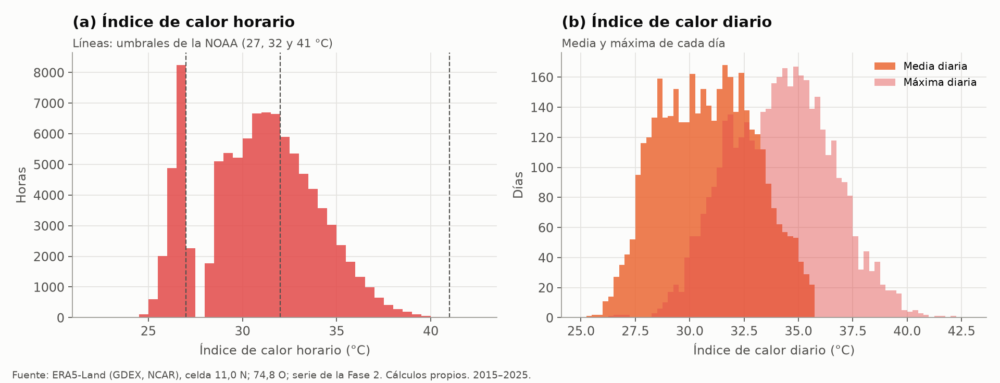
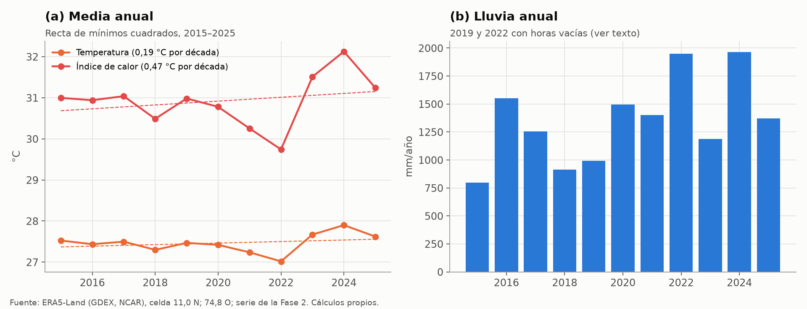
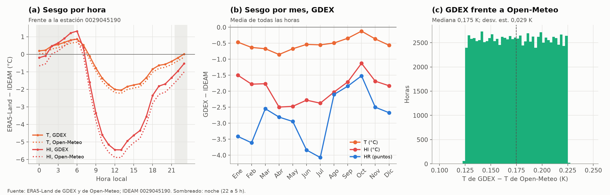
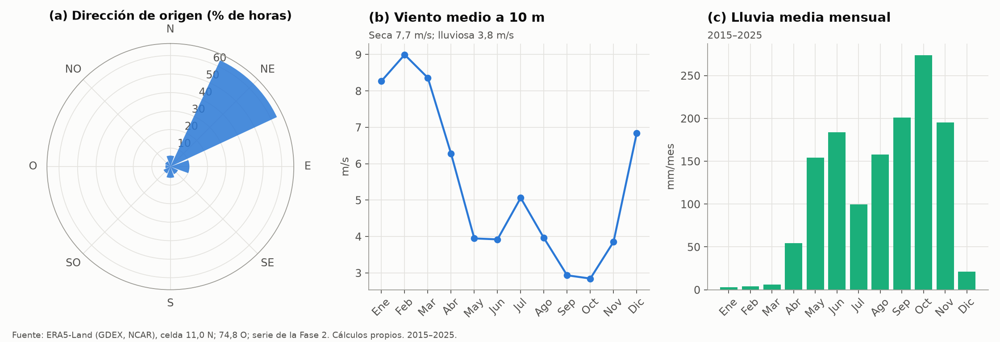
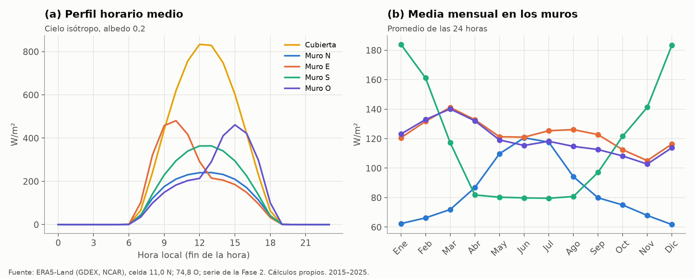
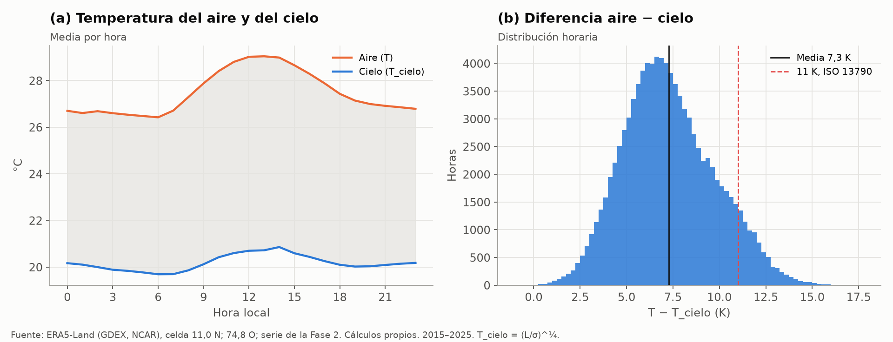

Clima horario (ERA5-Land, Open-Meteo e IDEAM)#
El clima entra en casi todos los pasos de la tesis: la carga de enfriamiento del Paso 3 que agrupa los arquetipos, la compuerta horaria con la demanda de XM, la Ecuación 9 con el consumo del SUI y, en la Fase 2, el modelo térmico 5R1C hora a hora. Este capítulo describe las tres fuentes que se usan (ERA5-Land de NCAR GDEX como fuente principal, la copia de ERA5-Land que sirve Open-Meteo como contraste y la estación 0029045190 del IDEAM como referencia medida), muestra su análisis exploratorio y explica cómo se arma la serie horaria de la Fase 2. Las cifras salen de scripts/eda/clima.py, que escribe las figuras figuras/eda/clima_*.png y las tablas tablas/eda/clima_*.csv.
Qué es#
ERA5-Land es un reanálisis del ECMWF que reconstruye las variables de superficie hora a hora en una malla de 0,1° (unos 11 km en Barranquilla), forzado por la atmósfera de ERA5 (Muñoz-Sabater et al., 2021). No es una medición: es la salida de un modelo de superficie que asimila indirectamente las observaciones a través de ERA5, así que no tiene huecos, pero representa la celda completa y no un punto de la ciudad. La tesis lo toma de dos distribuidores. GDEX, el archivo de datos del NCAR, entrega los campos originales en NetCDF (pedidos 953933 y 953943, de enero de 2015 a septiembre de 2026, en la ventana de 10,0–11,9° N y 74,0–74,9° O). Open-Meteo (Zippenfeld, 2023) sirve una copia sin credenciales en un punto, que fue la primera fuente de la compuerta horaria y que ahora se usa como contraste y para rellenar el punto de rocío que falta en GDEX.
La estación 0029045190 «APTO ERNESTO CORTISSOZ» del IDEAM (IDEAM, 2026) mide la temperatura y la humedad relativa en el aeropuerto, al sur de la ciudad. Se descarga de datos.gov.co (recursos sbwg-7ju4 y uext-mhny) y sirve para medir el sesgo del reanálisis, no para alimentar el modelo, porque tiene huecos largos (Figura 54).
Cobertura y estructura#
La serie horaria de la Fase 2 (fase2/clima/salidas/clima_horario_barranquilla.parquet) tiene 102.984 horas seguidas, sin horas repetidas ni saltos, desde la hora que termina a las 20:00 del 31 de diciembre de 2014 hasta la que termina a las 19:00 del 30 de septiembre de 2026, en hora local (UTC−5). Ese desfase de cinco horas con el calendario se debe a que la serie de GDEX empieza a la 01 UTC del 1 de enero de 2015. Cada fila es la hora que termina en hora_local: las variables instantáneas (temperatura, punto de rocío, presión y viento) son las del final de la hora, y las acumuladas (radiación de onda corta y larga y lluvia) son la media o el total de la hora que termina ahí. Se usa la celda de 11,0° N y 74,8° O, la más cercana al punto de la compuerta (10,96° N; 74,80° O) y la misma que usa Open-Meteo.
Fuente |
Variable |
Horas con dato |
Faltantes en el crudo |
Tratamiento |
|---|---|---|---|---|
ERA5-Land (GDEX) |
Temperatura, onda corta, onda larga, viento |
102.984 |
0 |
Ninguno |
ERA5-Land (GDEX) |
Punto de rocío |
102.376 |
608 |
Open-Meteo más 0,175 K |
ERA5-Land (GDEX) |
Presión |
102.976 |
8 |
Interpolación en el tiempo |
ERA5-Land (GDEX) |
Lluvia |
102.455 |
529 |
Ninguno (quedan vacías) |
IDEAM 0029045190 |
Temperatura |
80.556 |
22.428 |
203 registros fuera de 15–45 °C descartados |
IDEAM 0029045190 |
Humedad relativa |
77.165 |
25.819 |
4.410 registros fuera de 5–100 % descartados |
IDEAM 0029045190 |
Temperatura y humedad a la vez |
75.268 |
27.716 |
Base del contraste |
ERA5-Land está completo salvo en tres variables, y solo el punto de rocío y la presión se rellenan (Tabla 46). Los 608 huecos del punto de rocío son 311 tramos de 1 a 9 horas (la mitad de una sola hora) en 2019, 2022 y 2023, donde el campo viene vacío en toda la malla. La lluvia tiene 529 horas vacías concentradas en mayo de 2019 y entre febrero y junio de 2022 (Figura 54), que la documentación de la Fase 2 no registra (ver la última sección). La estación del IDEAM tiene temperatura y humedad a la vez en 73 % de las horas, con dos años casi vacíos: en 2021 y 2022 registra unas 2.000 horas de temperatura de las 8.760 del año.


Figura 54 Horas con dato por año en la estación del IDEAM (a) y horas rellenadas o vacías de ERA5-Land de GDEX (b), 2015–2025.#
Variables que usa la tesis#
Variable |
Unidad |
Definición |
Uso |
|---|---|---|---|
|
°C |
Temperatura del aire a 2 m (ERA5-Land, |
Carga del Paso 3, 5R1C, grados-hora, EPW |
|
°C |
Punto de rocío a 2 m ( |
Humedad y carga latente |
|
% |
Humedad relativa con la fórmula de Magnus (Alduchov y Eskridge, 1996) |
Índice de calor, contraste con el IDEAM |
|
kg/kg |
Humedad específica con la presión horaria |
Carga latente de la infiltración (5R1C) |
|
kPa |
Presión en superficie ( |
Humedad específica, EPW |
|
°C |
Índice de calor de la NOAA (regresión de Rothfusz con sus ajustes) (Rothfusz, 1990) |
Compuerta horaria (HI diario), Ecuación 9, grados-hora, ENSO |
|
W/m² |
Irradiancia global horizontal, onda corta descendente ( |
Sol-aire de la cubierta, carga del Paso 3 |
|
W/m² |
Directa normal y difusa horizontal con el modelo de Erbs (Erbs et al., 1982) |
Proyección en los muros, EPW |
|
W/m² |
Irradiancia en muros verticales, cielo isótropo y albedo 0,2 (pvlib (Holmgren et al., 2018)) |
Ganancias por muros y ventanas (5R1C) |
|
W/m² |
Onda larga descendente ( |
Corrección de onda larga de la cubierta |
|
°C, K |
\(T_{cielo} = (L/\sigma)^{1/4}\) y su diferencia con el aire |
Intercambio radiativo con el cielo (5R1C) |
|
m/s, ° |
Viento a 10 m ( |
EPW |
|
mm |
Precipitación de la hora ( |
Contexto de las fases ENSO, EPW |
|
Calendario de la compuerta horaria y vacaciones aproximadas (S19) |
Ocupación en la Fase 2, exclusión de 2020 |
La serie trae además la posición del sol (cenit_sol, azimut_sol) y la irradiancia extraterrestre (ETR_horizontal, ETR_normal), calculadas con pvlib a mitad de cada hora. El detalle de las columnas y las comprobaciones de la radiación están en fase2/clima/README.md.
Análisis exploratorio#
Ciclo anual#
Barranquilla tiene un clima cálido con poca variación de la temperatura en el año y una estación seca marcada (Figura 55). La temperatura media mensual va de 26,7 °C en febrero a 28,0 °C en agosto, apenas 1,3 °C, pero el índice de calor sube de 28,6 °C a 32,6 °C porque la humedad relativa pasa de 78 % en la temporada seca a 84 % en la lluviosa. Con la carga del A/C ligada al índice de calor más que a la temperatura, la estación cálida es la lluviosa, de mayo a noviembre. La irradiancia horizontal tiene el ciclo contrario: es máxima en marzo (282 W/m²) y mínima en noviembre (205 W/m²), con más nubes en la temporada de lluvias.


Figura 55 Media mensual de la temperatura, la humedad relativa, el índice de calor y la irradiancia global horizontal, con los percentiles 10 y 90 de las horas de cada mes, 2015–2025.#
Ciclo diario#
El ciclo diario pesa más que el anual, como muestra la Figura 56: en promedio, la temperatura va de 26,4 °C a las 6 h a 29,0 °C a las 13 h y el índice de calor de 28,8 °C a 33,8 °C, mientras la humedad relativa baja de 86 % de noche a 74,5 % al mediodía. Las noches de la temporada lluviosa son tan calurosas como las tardes de la seca: el índice de calor de 22 a 5 h está entre 29,8 °C y 30,9 °C de mayo a noviembre, frente a 32,3 °C a las 13 h de diciembre a abril. La irradiancia media alcanza 833 W/m² en la hora que termina a las 12 y es casi simétrica alrededor del mediodía, lo que confirma que la desacumulación y el paso a hora local están alineados (fase2/clima/salidas/comprobaciones_clima.json).


Figura 56 Perfil horario medio de la temperatura, la humedad relativa, el índice de calor y la irradiancia en las temporadas seca (diciembre a abril) y lluviosa (mayo a noviembre), 2015–2025.#
Distribución del índice de calor#
Horas |
Menos de 27 °C |
27–32 °C (precaución) |
32–41 °C (precaución extrema) |
41 °C o más (peligro) |
HI medio (°C) |
Percentil 95 (°C) |
|---|---|---|---|---|---|---|
Todas |
16,4 |
47,3 |
36,3 |
0,01 |
30,9 |
35,8 |
Noche (22 a 5 h) |
29,6 |
53,3 |
17,1 |
0,00 |
29,4 |
33,6 |
Tarde (12 a 17 h) |
0,9 |
33,6 |
65,5 |
0,04 |
33,1 |
37,1 |
El índice de calor pasa de 32 °C en un tercio de las horas y en dos de cada tres horas de la tarde, pero casi nunca llega a 41 °C (Tabla 48). El máximo horario de la serie es 42,1 °C, y la media diaria, que es la que usa la compuerta horaria, está entre 27,6 °C y 34,7 °C en 90 % de los días. Como ERA5-Land subestima el calor del mediodía (más abajo), estas proporciones son un piso para la tarde.
La distribución horaria tiene un pico entre 26 °C y 27 °C y un hueco entre 27,5 °C y 28,3 °C, donde cae solo 0,5 % de las horas (Figura 57). El hueco no es del clima sino del algoritmo de la NOAA, que usa la fórmula simple de Steadman mientras su promedio con la temperatura no llega a 80 °F (26,7 °C) y la regresión de Rothfusz por encima. En aire tan húmedo las dos fórmulas no empalman: con 85 % de humedad, el HI pasa de 27,1 °C con 26,2 °C de aire a 28,5 °C con 26,3 °C. El salto cae justo en las temperaturas de la noche, así que una décima de grado puede mover una hora nocturna 1,4 °C en el HI.


Figura 57 Distribución del índice de calor horario con los umbrales de la NOAA (a) y de su media y máxima diarias (b), 2015–2025.#
Variación entre años#
Entre 2015 y 2025 la temperatura media sube 0,19 °C por década y el índice de calor 0,47 °C por década, pero la recta resume mal una serie dominada por El Niño y La Niña (Figura 58). El año más fresco es 2022 (índice de calor medio de 29,7 °C), en plena La Niña, y el más caluroso 2024 (32,1 °C), después de El Niño de 2023–2024. Los grados-hora con el índice de calor y base de 26,5 °C pasan de 28.900 K·h en 2022 a 49.506 K·h en 2024, un 71 % más (tablas/eda/clima_tendencia_anual.csv). Con once años y dos fases extremas al final, la pendiente no se debe leer como calentamiento de largo plazo. El capítulo El Niño y La Niña separa las dos cosas. La lluvia anual va de 796 mm (2015) a 1.965 mm (2024). El total de 2022 (1.948 mm) está subestimado por las 436 horas vacías de ese año, y la lluvia de ERA5-Land no se ha contrastado con una medición.


Figura 58 Temperatura e índice de calor medios de cada año con su recta de mínimos cuadrados (a) y lluvia anual (b), 2015–2025.#
GDEX, Open-Meteo e IDEAM#
Variable |
Horas |
Media GDEX |
Media Open-Meteo |
Diferencia media |
Desv. est. de la diferencia |
Correlación |
|---|---|---|---|---|---|---|
Temperatura (°C), ERA5-Land en las dos |
102.984 |
27,49 |
27,32 |
+0,175 |
0,029 |
1,000 |
Punto de rocío (°C), ERA5-Land en las dos |
102.376 |
24,05 |
23,87 |
+0,175 |
0,029 |
1,000 |
Irradiancia (W/m²), ERA5-Land frente a ERA5 |
102.984 |
244,6 |
238,8 |
+5,8 |
19,0 |
0,998 |
Viento a 10 m (m/s), ERA5-Land frente a ERA5 |
102.984 |
5,46 |
2,86 |
+2,59 |
1,90 |
0,806 |
La temperatura y el punto de rocío de GDEX son los de Open-Meteo más una constante de 0,175 K, sin dispersión apreciable (Tabla 49 y panel c de Figura 59). Open-Meteo no trae la radiación ni el viento de ERA5-Land en el punto (los campos vienen vacíos) y entrega los de ERA5, de 0,25°. La irradiancia de ERA5-Land es 2,4 % mayor, con la misma forma. El viento, en cambio, casi se duplica: 5,5 m/s en ERA5-Land frente a 2,9 m/s en ERA5, con una correlación de solo 0,81. Ninguna de las dos fuentes de viento se ha contrastado con una medición.
Frente al IDEAM, GDEX reproduce bien la noche y subestima el mediodía, con un sesgo de la temperatura de −0,52 °C en promedio, +0,35 °C de 22 a 5 h y −2,05 °C a las 13 h, y el del índice de calor llega a −5,5 °C a esa hora (Figura 59). Estas cifras reproducen la Tabla 72 de Coherencia de los datos, donde se discuten sus causas. Por mes, el sesgo de la temperatura va de −0,85 °C en abril a −0,12 °C en octubre, y el de la humedad relativa es más negativo en junio y julio (−3,8 y −4,1 puntos). Las dos copias de ERA5-Land tienen la misma forma del sesgo, desplazada 0,175 K.


Figura 59 Sesgo de ERA5-Land frente al IDEAM por hora con las dos copias (a) y por mes con GDEX (b), y diferencia horaria de la temperatura entre GDEX y Open-Meteo (c).#
Viento y lluvia#
El viento de ERA5-Land viene del nordeste en 63 % de las horas, con 7,0 m/s de media en ese sector, y es el alisio del Caribe: 7,7 m/s en la temporada seca y 3,8 m/s en la lluviosa, con un máximo de 9,0 m/s en febrero y un repunte en julio, el veranillo de San Juan (Figura 60). La lluvia sigue el patrón bimodal de la costa: menos de 6 mm al mes de enero a marzo, un primer pico en mayo y junio, una baja en julio y el máximo en octubre (274 mm). Las horas con al menos 0,1 mm pasan de menos de 1 % en enero a 44 % en octubre (tablas/eda/clima_viento_lluvia_mensual.csv).


Figura 60 Dirección de origen del viento (a), viento medio mensual a 10 m (b) y lluvia media mensual (c) de ERA5-Land, 2015–2025.#
Radiación en muros y cubierta#
Superficie |
W/m² (media de 24 h) |
kWh/m² por día |
|---|---|---|
Cubierta (horizontal) |
243,7 |
5,85 |
Muro norte |
84,6 |
2,03 |
Muro este |
123,0 |
2,95 |
Muro sur |
117,2 |
2,81 |
Muro oeste |
119,4 |
2,87 |
La cubierta recibe el doble de radiación que cualquier muro, lo que explica que pese cerca de la mitad de la carga del Paso 3 (Tabla 50). Los muros este, sur y oeste reciben casi lo mismo en el año, y el norte un 30 % menos. A 11° N el sol pasa al norte del cenit de finales de abril a mediados de agosto, así que la orientación que más recibe cambia con la estación: el muro sur llega a 184 W/m² en diciembre y enero y baja a 80 W/m² de mayo a agosto, mientras el norte sube de 62 W/m² en diciembre a 121 W/m² en junio (Figura 61). La difusa es 40 % de la irradiancia global diurna. Ninguna de estas proyecciones se ha contrastado con una medición de radiación en Barranquilla.


Figura 61 Irradiancia media por hora en la cubierta y en los muros de cada orientación (a) y su media mensual en los muros (b), 2015–2025.#
Temperatura del cielo#
La temperatura del cielo, calculada con la onda larga descendente de ERA5-Land, es de 20,2 °C en promedio, 7,3 K por debajo del aire (Figura 62). La diferencia es mayor al mediodía (8,3 K) que de madrugada (6,5 K) y mucho mayor en la temporada seca (9,1 K) que en la lluviosa (6,0 K), cuando el cielo es más húmedo y nublado y emite más. Está lejos de los 11 K que la ISO 13790 propone por defecto para el 5R1C (ISO, 2008), que supone un cielo más frío y seco que el del Caribe. Solo 6 horas de toda la serie tienen el cielo más caliente que el aire.


Figura 62 Temperatura media del aire y del cielo por hora (a) y distribución horaria de su diferencia frente al valor por defecto de la ISO 13790 (b), 2015–2025.#
Procesamiento paso a paso#
Los scripts de la compuerta horaria están en scripts/compuerta/ del repositorio y los de la Fase 2 en fase2/clima/scripts/ (Reproducibilidad).
Pedido a GDEX. Entrada: el dataset d633008 de gdex.ucar.edu, con una cuenta gratuita. Operación: dos pedidos, 953933 (
t2m,d2m,sp,u10,v10) y 953943 (ssrd,strd,tp), de enero de 2015 a septiembre de 2026, recortados a 10,0–11,9° N y 74,0–74,9° O. Salida: 6.776 archivos NetCDF de cinco días (847 por variable) en las carpetasera5land_metyera5land_rad_tp, descargados con los scripts que genera GDEX. Decisión: pedir una ventana y no un punto, para poder probar las celdas vecinas (paso 10).Extracción de la celda. Script:
01b_extraer_era5land_gdex.py. Entrada: los NetCDF. Operación: para cada variable se toma la celda más cercana a 11,0° N y 74,8° O, se concatenan los archivos y se quitan las horas repetidas en los bordes. Salida: una serie por variable en UTC.Desacumulación. Mismo script. ERA5-Land acumula
ssrd,strdytpdesde las 00 UTC, así que el valor de una hora es la diferencia con la hora anterior, salvo a la 01 UTC, que es la primera hora acumulada. Luego la radiación se divide entre 3.600 s para pasar de J/m² a W/m², la lluvia se multiplica por 1.000 para pasar a mm, y los valores negativos de la onda corta y la lluvia, que deja la resta, se llevan a cero. La primera hora (00 UTC del 1 de enero de 2015) se descarta porque no tiene la anterior. Salida:datos/crudos/era5land_gdex/era5land_horario_11.0N_74.8W.csv.gz, con 102.984 horas de T, Td (°C), presión (kPa), onda corta y larga (W/m²), viento, sus componentes y lluvia. Decisión: desacumular en UTC, antes del cambio de hora, para no partir el día de acumulación del ECMWF.Descarga de Open-Meteo e IDEAM. Script:
01_clima.py descargar. Operación: un archivo JSON por año de Open-Meteo (om_2015.jsonaom_2026.json, en UTC) con la temperatura y el rocío de ERA5-Land y la radiación y el viento de ERA5, y las tablas de temperatura y humedad de la estación 0029045190 desde la API de datos.gov.co. Salida:datos/crudos/openmeteo/ydatos/crudos/ideam/.Relleno de huecos. Script:
fase2/clima/scripts/01_serie_clima.py. Operación: las 608 horas sin punto de rocío toman el de Open-Meteo más la mediana de la diferencia entre las dos fuentes (0,175 K), y las 8 horas sin presión de 2026 se interpolan en el tiempo. Las banderastd_rellenoyp_interpoladamarcan esas horas. Decisión: Open-Meteo es el mismo ERA5-Land desplazado por una constante (Tabla 49), así que el relleno no introduce un salto. La lluvia vacía no se rellena (ver la última sección).Humedad e índice de calor. Mismo script. La humedad relativa sale de la temperatura y el rocío con Magnus (Alduchov y Eskridge, 1996), la humedad específica de la presión de vapor y la presión horaria, y el índice de calor con la regresión de Rothfusz y los ajustes de la NOAA para humedad baja y alta (Rothfusz, 1990). Decisión: usar las mismas funciones que la compuerta horaria (
comun.py), para que el HI de la Fase 2 sea idéntico al de la compuerta.Radiación en superficies. Mismo script. La posición del sol se calcula a mitad de la hora que termina en cada fila con el algoritmo SPA de pvlib (Holmgren et al., 2018), porque la irradiancia es la media de esa hora. La global se separa en directa normal y difusa con el modelo de Erbs (Erbs et al., 1982) y se proyecta en cuatro muros verticales (N, E, S, O) con cielo isótropo y albedo de 0,2. La comprobación de cierre (directa por coseno del cenit más difusa igual a la global) da un error máximo de 10⁻¹³ W/m², y solo 0,2 % de las horas supera en 10 % el cielo despejado de Ineichen. Decisión: el cielo isótropo es el modelo más simple y conservador para muros, y la ciudad no tiene una medición de radiación para elegir otro.
Cielo, viento y hora local. Mismo script. La temperatura del cielo es \((L/\sigma)^{1/4}\) con la onda larga descendente, la dirección del viento sale de
u10yv10como dirección de origen, y el índice pasa de UTC a hora local restando cinco horas. El calendario (tipo de día, festivos, Carnaval, Semana Santa, fin de año, vacaciones escolares aproximadas y 2020) se asigna por la fecha local de la hora, de modo que la hora que termina a las 00:00 pertenece al día anterior. Salida:fase2/clima/salidas/clima_horario_barranquilla.parquety.csv.gz, ycomprobaciones_clima.json. Decisión: las vacaciones escolares son una aproximación del calendario A (supuesto S19 en Supuestos).Contraste con el IDEAM. Script:
01_clima.py procesar(yscripts/eda/clima.pypara las figuras de este capítulo). Operación: cada registro del IDEAM se lleva a su hora en punto, se descartan las temperaturas fuera de 15–45 °C y las humedades fuera de 5–100 %, se promedian los registros de cada hora y se calcula el índice de calor con las mismas funciones. Se cruza con ERA5-Land por hora local y se calculan el sesgo y el RMSE por hora y por mes. El RMSE de la temperatura es mínimo sin desfase, lo que confirma que la serie del IDEAM ya está en hora local. Salida:tablas/contraste_era5land_ideam.csvytablas/eda/clima_contraste_*.csv.Productos derivados. Con la serie se generan el EPW de 2024 (
02_epw.py), las fases ENSO (03_enso.py, capítulo El Niño y La Niña), los grados-hora para la Ecuación 9 (04_cdh_sui.py), la sensibilidad a la celda (05_celdas_vecinas.py, que relee los NetCDF), la corrección de onda larga de la cubierta (06_onda_larga_paso3.py) y los días representativos (07_dias_representativos.py). Sus resultados están enfase2/clima/README.mdy en Insumos del modelo.
Qué entrega al modelo#
La base entrega la serie horaria de clima de 2015 a septiembre de 2026 en hora local, sin horas faltantes en las variables que usa la carga, con la radiación en cada orientación, la temperatura del cielo y el calendario, más el EPW de 2024 para verificar el 5R1C contra EnergyPlus. Las filas de clima, onda larga, elección de celda y días representativos de Insumos del modelo dan el valor, la incertidumbre y el paso de la propuesta de cada producto. La incertidumbre principal es el sesgo frente al IDEAM: −0,5 °C en la temperatura, casi nulo de noche y de −2 °C al mediodía, que se traslada al índice de calor y, por tanto, a la carga diurna.
Problemas encontrados y cómo se trataron#
Punto de rocío vacío en GDEX. 608 horas de 2019, 2022 y 2023 vienen vacías en toda la malla. Se rellenaron con Open-Meteo más 0,175 K. Sin el relleno la compuerta pierde 38 días y la respuesta nocturna apenas cambia (Respuesta horaria al calor).
Lluvia vacía en GDEX. El campo acumulado
tpviene vacío en toda la malla en algunas horas de mayo de 2019 y de febrero a junio de 2022. Al desacumular, cada hora vacía deja también vacía la siguiente, y quedan 529 horas sin lluvia (93 en 2019 y 436 en 2022). La serie no las rellena, y los totales mensuales y anuales de esos meses están subestimados, lo que afecta a la anomalía de lluvia por fase ENSO. Como la variable es acumulada desde las 00 UTC, se podría recuperar el total diario restando las horas válidas que rodean cada hueco. Queda pendiente, porque la lluvia no entra en la carga.Radiación y viento de Open-Meteo. La copia de Open-Meteo no trae la onda corta ni el viento de ERA5-Land en el punto, sino los de ERA5. La radiación cambia poco (2,4 %), pero el viento de ERA5-Land es casi el doble que el de ERA5. La tesis usa el de ERA5-Land de GDEX en el EPW. Falta contrastarlo con el viento medido en el aeropuerto, que no se ha descargado.
Mediodía subestimado. ERA5-Land queda unos 2 °C por debajo del IDEAM al mediodía y el índice de calor hasta 5,5 °C. No se corrige, porque la estación no es representativa de toda la ciudad y tiene años casi vacíos, pero se declara como incertidumbre de la carga diurna (Tabla 72). La respuesta de la compuerta depende de la fuente del HI y no debe usarse como valor absoluto (Coherencia de los datos).
Salto del índice de calor. El algoritmo de la NOAA cambia de fórmula cerca de 26,7 °C y el HI salta entre 1,2 y 1,4 °C en aire húmedo, lo que deja casi vacía la franja de 27,5 a 28,3 °C. El salto está en el algoritmo publicado (Rothfusz, 1990) y no se corrige, porque la compuerta, la Ecuación 9 y las fases ENSO ya usan este HI y cambiarlo rompería la comparación. Afecta sobre todo a las horas nocturnas y a los grados-hora con base cercana a 26,5 °C. Queda como limitación declarada y como punto por revisar si el HI horario entra al modelo como umbral.
Huecos del IDEAM. La estación tiene temperatura y humedad a la vez en 73 % de las horas y apenas unas 2.000 horas por año en 2021 y 2022. Por eso se usa solo como referencia del sesgo y no como fuente del modelo.
Una sola celda para la ciudad. ERA5-Land no representa la superficie urbana. Entre las seis celdas de tierra vecinas, el índice de calor cambia entre −0,8 y +0,7 °C y la carga del Paso 3 entre −2,7 % y +3,4 %, que es una cota de la elección de celda y no de la isla de calor (Insumos del modelo).
Radiación sin medición. La separación de Erbs y la proyección en muros no se han contrastado con una medición en Barranquilla (Coherencia de los datos, validación pendiente).
Meses nuevos. GDEX publica los meses nuevos de ERA5-Land con rezago. Para la prueba con datos de 2027 habrá que pedir los meses desde octubre de 2026 y repetir los pasos 2 a 8 (Datos sospechosos y pendientes).